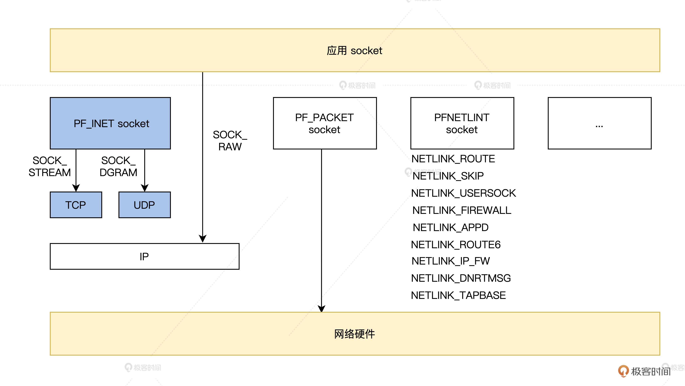

- 00 开篇词 为什么要学写一个操作系统？.md
- 00 编辑手记 升级认知，迭代自己的操作系统.md
- 01 程序的运行过程：从代码到机器运行.md
- 02 几行汇编几行C：实现一个最简单的内核.md
- 03 黑盒之中有什么：内核结构与设计.md
- 04 震撼的Linux全景图：业界成熟的内核架构长什么样？.md
- 05 CPU工作模式：执行程序的三种模式.md
- 06 虚幻与真实：程序中的地址如何转换？.md
- 07 Cache与内存：程序放在哪儿？.md
- 08 锁：并发操作中，解决数据同步的四种方法.md
- 09 瞧一瞧Linux：Linux的自旋锁和信号量如何实现？.md
- 10 设置工作模式与环境（上）：建立计算机.md
- 11 设置工作模式与环境（中）：建造二级引导器.md
- 12 设置工作模式与环境（下）：探查和收集信息.md
- 13 第一个C函数：如何实现板级初始化？.md
- 14 Linux初始化（上）：GRUB与vmlinuz的结构.md
- 15 Linux初始化（下）：从_start到第一个进程.md
- 16 划分土地（上）：如何划分与组织内存？.md
- 17 划分土地（中）：如何实现内存页面初始化？.md
- 18 划分土地（下）：如何实现内存页的分配与释放？.md
- 19 土地不能浪费：如何管理内存对象？.md
- 20 土地需求扩大与保障：如何表示虚拟内存？.md
- 21 土地需求扩大与保障：如何分配和释放虚拟内存？.md
- 22 瞧一瞧Linux：伙伴系统如何分配内存？.md
- 23 瞧一瞧Linux：SLAB如何分配内存？.md
- 24 活动的描述：到底什么是进程？.md
- 25 多个活动要安排（上）：多进程如何调度？.md
- 26 多个活动要安排（下）：如何实现进程的等待与唤醒机制？.md
- 27 瞧一瞧Linux：Linux如何实现进程与进程调度_.md
- 28 部门分类：如何表示设备类型与设备驱动？.md
- 29 部门建立：如何在内核中注册设备？.md
- 30 部门响应：设备如何处理内核I_O包？.md
- 31 瞧一瞧Linux：如何获取所有设备信息？.md
- 32 仓库结构：如何组织文件_.md
- 33 仓库划分：文件系统的格式化操作.md
- 34 仓库管理：如何实现文件的六大基本操作？.md
- 35 瞧一瞧Linux：虚拟文件系统如何管理文件？.md
- 36 从URL到网卡：如何全局观察网络数据流动？.md
- 37 从内核到应用：网络数据在内核中如何流转.md
- 38 从单排到团战：详解操作系统的宏观网络架构.md
- 39 瞧一瞧Linux：详解socket实现与网络编程接口.md
- 40 瞧一瞧Linux：详解socket的接口实现.md
- 41 服务接口：如何搭建沟通桥梁？.md
- 42 瞧一瞧Linux：如何实现系统API？.md
- 43 虚拟机内核：KVM是什么？.md
- 44 容器：如何理解容器的实现机制？.md
- 45 ARM新宠：苹果的M1芯片因何而快？.md
- 46 AArch64体系：ARM最新编程架构模型剖析.md
- LMOS来信：第二季课程带你“手撕”计算机基础.md
- 大咖助场 以无法为有法，以无限为有限.md
- 用户故事 yiyang：我的上机实验“爬坑指南”.md
- 用户故事 成为面向“知识库”的工程师.md
- 用户故事 技术人如何做选择，路才越走越宽？.md
- 用户故事 操作系统发烧友：看不懂？因为你没动手.md
- 用户故事 用好动态调试，助力课程学习.md
- 用户故事 艾同学：路虽远，行则将至.md
- 结束语 生活可以一地鸡毛，但操作系统却是心中的光.md
39 瞧一瞧Linux：详解socket实现与网络编程接口
你好，我是LMOS。
前面我们了解了网络的宏观架构，建立了网络模块知识的大局观，也进行了实际的组网实践。现在我们来瞧一瞧Linux的网络程序，不过想要入门Linux的网络编程，套接字也是一个绕不开的重要知识点，正是有了套接字，Linux系统才拥有了网络通信的能力。而且网络协议的最底层也是套接字，有了这个基础，你再去看相关的网络协议的时候也会更加轻松。
我会通过两节课的内容带你了解套接字的原理和具体实现。这节课，我们先来了解套接字的作用、工作原理和关键数据结构。下一节课，我们再一起研究它在Linux内核中的设计与实现。
好，让我们开始今天的学习吧。
如何理解套接字
根据底层网络机制的差异，计算机网络世界中定义了不同协议族的套接字（socket），比如DARPA Internet地址（Internet套接字）、本地节点的路径名（Unix套接字）、CCITT X.25地址（X.25 套接字）等。
我们会重点讲解跟网络子系统和TCP/IP协议栈息息相关的一种套接字——Internet 套接字。如果你对其他类型的套接字有兴趣，可以自行阅读这里的资料。
Internet套接字是TCP/IP协议栈中传输层协议的接口，也是传输层以上所有协议的实现。
同时，套接字接口在网络程序功能中是内核与应用层之间的接口。TCP/IP协议栈的所有数据和控制功能都来自于套接字接口，与OSI网络分层模型相比，TCP/IP协议栈本身在传输层以上就不包含任何其他协议。
在Linux操作系统中，替代传输层以上协议实体的标准接口，称为套接字，它负责实现传输层以上所有的功能，可以说套接字是TCP/IP协议栈对外的窗口。
Linux套接字API适合所有的应用标准，现在的应用层协议也全部移植到了Linux系统中。但请你注意，在套接字层下的基础体系结构实现却是Linux系统独有的，Linux内核支持的套接字结构如图所示。-

我们创建套接字时，可以通过参数选择协议族，为应用程序指定不同的网络机制。如果指定为PF_INET协议族，这里的套接字就叫做INET套接字，它的套接字接口函数提供了TCP/IP网络服务功能。现在我先带你了解一下套接字的数据结构。
套接字的数据结构
在Linux操作系统下，对套接字、套接字的属性、套接字传输的数据格式还有管理套接字连接状态的数据结构分别做了一系列抽象定义。
每个程序使用的套接字都有一个struct socket数据结构与struct sock数据结构的实例。
Linux内核在套接字层定义了包含套接字通用属性的数据结构，分别是struct socket与struct sock，它们独立于具体协议；而具体的协议族与协议实例继承了通用套接字的属性，加入协议相关属性，就形成了管理协议本身套接字的结构。
struct socket数据结构
struct socket是套接字结构类型，每个套接字在内核中都对应唯一的struct socket结构（用户程序通过唯一的套接字描述符来表示套接字，且描述符与struct socket结构一一对应）。
我们来看看struct socket数据结构是什么样，代码如下，我相信配合注释你有能力理解它。
struct socket {
socket_state state; // 套接字的状态
unsigned long flags; // 套接字的设置标志。存放套接字等待缓冲区的状态信息，其值的形式如SOCK_ASYNC_NOSPACE等
struct fasync_struct *fasync_list; // 等待被唤醒的套接字列表，该链表用于异步文件调用
struct file *file; // 套接字所属的文件描述符
struct sock *sk; // 指向存放套接字属性的结构指针
wait_queue_head_t wait; //套接字的等待队列
short type; // 套接字的类型。其取值为SOCK_XXXX形式
const struct proto_ops *ops; // 套接字层的操作函数块
}
struct sock数据结构
在Linux内核的早期版本中，struct sock数据结构非常复杂。从Linux2.6版本以后，从两个方面对该数据结构做了优化。
其一是将struct sock数据结构划分成了两个部分。一部分为描述套接字的共有属性，所有协议族的这些属性都一样；另一部分属性定义在了struct sock_common数据结构中。
其二是为新套接字创建struct sock数据结构实例时，会从协议特有的缓冲槽中分配内存，不再从通用缓冲槽中分配内存。
struct sock数据结构包含了大量的内核管理套接字的信息，内核把最重要的成员存放在struct sock_common数据结构中，struct sock_common数据结构嵌入在struct sock结构中，它是struct sock数据结构的第一个成员。
struct sock_common数据结构是套接字在网络中的最小描述，它包含了内核管理套接字最重要信息的集合。而struct sock数据结构中包含了套接字的全部信息与特点，有的特性很少用到，甚至根本就没有用到。我们这里就看一下struct sock_common的数据结构，代码如下。
struct sock_common {
unsigned short skc_family; /*地址族*/
volatile unsigned char skc_state; /*连接状态*/
unsigned char skc_reuse; /*SO_REUSEADDR设置*/
int skc_bound_dev_if;
struct hlist_node skc_node;
struct hlist_node skc_bind_node; /*哈希表相关*/
atomic_t skc_refcnt; /*引用计数*/
};
结合代码可以看到，系统中struct sock数据结构组织在特定协议的哈希链表中，skc_node是连接哈希链表中成员的哈希节点，skc_hash是引用的哈希值。接收和发送数据放在数据struct sock数据结构的两个等待队列中：sk_receive_queue和sk_write_queue。这两个队列中包含的都是Socket Buffer（后面我会展开讲）。
内核使用struct sock数据结构实例中的回调函数，获取套接字上某些事件发生的消息或套接字状态发生变化。其中，使用最频繁的回调函数是sk_data_ready，用户进程等待数据到达时，就会调用该回调函数。
套接字与文件
套接字的连接建立起来后，用户进程就可以使用常规文件操作访问套接字了。
这种方式在内核中如何实现，这要取决于Linux虚拟文件系统层（VFS）的实现。在VFS中，每个文件都有一个VFS inode结构，每个套接字都分配了一个该类型的inode，套接字中的inode指针连接管理常规文件的其他结构。操作文件的函数存放在一个独立的指针表中，代码如下。
struct inode{
struct file_operation *i_fop // 指向默认文件操作函数块
}
套接字的文件描述符的文件访问的重定向，对网络协议栈各层是透明的。而inode和socket的链接是通过直接分配一个辅助数据结构来实现的，这个数据结构的代码如下。
struct socket_slloc {
struct socket socket;
struct inode vfs_inode;
}
套接字缓存
前面我们提到了一个Socket Buffer，也就是套接字缓存，它代表了一个要发送或者处理的报文。在Linux网络子系统中，Socket Buffer是一个关键的数据结构，因为它贯穿于整个TCP/IP协议栈的各层。Linux内核对网络数据打包处理的全过程中，始终伴随着这个Socket Buffer。
你可以这样理解，Socket Buffer就是网络数据包在内核中的对象实例。
Socket Buffer主要由两部分组成。
1.数据包：存放了在网络中实际流通的数据。- 2.管理数据结构（struct sk_buff）：当在内核中对数据包进行时，内核还需要一些其他的数据来管理数据包和操作数据包，例如协议之间的交换信息，数据的状态，时间等。
Socket Buffer有什么作用呢？struct sk_buff数据结构中存放了套接字接收/发送的数据。在发送数据时，在套接字层创建了Socket Buffer缓冲区与管理数据结构，存放来自应用程序的数据。在接收数据包时，Socket Buffer则在网络设备的驱动程序中创建，存放来自网络的数据。
在发送和接受数据的过程中，各层协议的头信息会不断从数据包中插入和去掉，sk_buff结构中描述协议头信息的地址指针也会被不断地赋值和复位。
套接字的初始化
Linux的网络体系结构可以支持多个协议栈和网络地址类型。内核支持的每一个协议栈都会在套接字层注册一个地址族。这就解释了为什么在套接字层可以有一个通用的API，供完全不同的协议栈使用。
Linux内核支持的地址族非常多，TCP/IP协议栈在套接字层注册的地址族是AF_INET，AF_INET地址族是在内核启动时注册到内核中的。TCP/IP协议栈与AF_INET地址族相连的处理函数，既可以在套接字初始化时与AF_INET地址连接起来，也可以在套接字中动态地注册新的协议栈。
套接字层的初始化要为以后各协议初始化struct sock数据结构对象、套接字缓冲区Socket Buffer对象等做好准备，预留内存空间。
套接字层初始化要完成的基本任务包括后面这三项。
1.初始化套接字的缓存槽- 2.为Socket Buffer创建内存缓存槽- 3.创建虚拟文件系统
初始化函数代码如下所示。
static int __init sock_init(void) {
int err;
/*
* 初始化.sock缓存
*/
sk_init();
/*
* 初始化sk_buff缓存
skb_init();
/* 初始化协议模块缓存
init_inodecache();
/* 注册文件系统类型 */
err = register_filesystem(&sock_fs_type);
if (err) goto out_fs;
sock_mnt = kern_mount(&sock_fs_type);
if (IS_ERR(sock_mnt)) {
err = PTR_ERR(sock_mnt);
goto out_mount;
}
}
地址族的值和协议交换表
套接字是一个通用接口，它可以与多个协议族建立接口，每个协议族中又可以实现多个协议实例。
TCP/IP协议栈处理完输入数据包后，将数据包交给套接字层，放在套接字的接收缓冲区队列（sk_rcv_queue）。然后数据包从套接字层离开内核，送给应用层等待数据包的用户程序。用户程序向外发送的数据包缓存在套接字的传送缓冲区队列（sk_write_queue），从套接字层进入内核地址空间。
在同一个主机中，可以同时在多个协议上打开多个套接字，来接收和发送网络数据，套接字层必须确定哪个套接字是当前数据包的目标套接字。
怎么精准确定呢？
在Linux内核里有一个叫做struct inet_protosw的数据结构，它就负责完成这个功能，具体来看就是管理和描述struct proto_ops和struct proto之间的对应关系。这里struct proto_ops就是系统调用套接字的操作函数块，而struct proto就是跟内核协议相关的套接字操作函数块。
后面这段代码是inet_protosw。
struct inet_protosw {
struct list_head list;
unsigned short type; /* AF_INET协议族套接字的类型,如TCP为SOCK_STREAM*/
unsigned short protocol; /* 协议族中某个协议实例的编号。如TCP协议的编码为IPPROTO_TCP */
struct proto *prot;
const struct proto_ops *ops;
unsigned char flags; /* 该套接字属性的相关标志 */
}
结合上面代码我们发现，内核使用struct inet_protosw数据结构实现的协议交换表，将应用程序通过socketcall系统调用指定的套接字操作，转换成对某个协议实例实现的套接字操作函数的调用。
struct inet_protosw类型把INET套接字的协议族操作集与传输层协议操作集关联起来。该类型的inetsw_array数组变量实现了INET套接字的协议族操作集与具体的传输层协议关联。由struct inet_protosw数据结构类型数组inetsw_array[]构成的向量表，称为协议交换表，协议交换表满足了套接字支持多协议栈这项功能。
重点回顾
好，这节课的内容告一段落了，我来给你做个总结。这节课我们一起理解了Linux内核套接字的概念。
套接字是UNIX兼容系统的一大特色，是UNIX一切皆是文件操作概念的具体实现，从实现的角度来看，套接字是通信的抽象描述；从内核角度看，同时也是一个管理通信过程的对象——struct socket结构。
Linux的网络体系结构可以支持多个协议栈和网络地址类型，通过地址族的值和协议交换表，Linux的套接字实现了支持多协议栈这项功能。
我特意为你梳理了这节课最关键的两个要点，需要你重点理解。
1.从描述Linux套接字接口的数据结构、套接字接口初始化过程可知，Linux套接字体系结构独立于具体网络协议栈的套接字，可以同时支持多个网络协议栈的工作。- 2.套接字内核实现，我们具体分析了套接字从创建的过程。根据分析我们可以发现，任何协议栈都可以在套接字通用体系结构的基础上，派生出具有协议族特点的套接字接口。
思考题
套接字也是一种进程间通信机制，它和其他通信机制有什么不同？
欢迎你在留言区记录你的疑惑或者心得，也推荐你把这节课分享给身边的同事、朋友，跟他一起学习进步。
我是LMOS。我们下节课见！
© 2019 - 2023 Liangliang Lee. Powered by gin and hexo-theme-book.